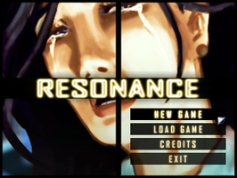
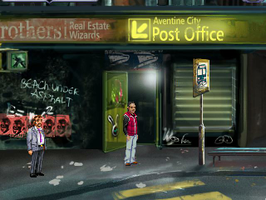
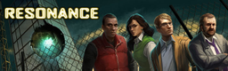

Resonance
Dieser Artikel wurde für die folgenden Ubuntu-Versionen getestet:
Ubuntu 16.04 Xenial Xerus
Ubuntu 14.04 Trusty Tahr
Zum Verständnis dieses Artikels sind folgende Seiten hilfreich:
Resonance  - Der Teilchenphysiker Dr. Javier Morales hat eine Technologie entdeckt, welche das Potential hat, der Welt saubere und unbegrenzte Energie zu schenken. Eine Technologie, welche in den falschen Händen großes Unheil anrichten kann. Er ist entschlossen, sein Lebenswerk zu vernichten... Nach seinem unerwarteten Tod beginnt ein Rennen um diese Entdeckung. Vier Charaktere (Ed, Anna, Detective Bennet und Ray) gehen der Geschichte im Kampf gegen die Zeit auf den Grund...
- Der Teilchenphysiker Dr. Javier Morales hat eine Technologie entdeckt, welche das Potential hat, der Welt saubere und unbegrenzte Energie zu schenken. Eine Technologie, welche in den falschen Händen großes Unheil anrichten kann. Er ist entschlossen, sein Lebenswerk zu vernichten... Nach seinem unerwarteten Tod beginnt ein Rennen um diese Entdeckung. Vier Charaktere (Ed, Anna, Detective Bennet und Ray) gehen der Geschichte im Kampf gegen die Zeit auf den Grund...
|  |  |
| Menü | Spielszene |
Installation¶
Nach dem Erwerb des jeweiligen Spiels von der Entwicklerseite dieses von der persönlichen Seite herunterladen.
Mittels des Programms innoextract werden die benötigten Spieledateien entpackt [1] um diese unter Linux verwenden zu können:
innoextract -L ResonanceSetupV2.exe
Die folgenden Dateien werden extrahiert:
Extracting "Resonance" - setup data version 5.3.10 - "app/resonance.exe" (810 MiB) - "app/acsetup.cfg" (326 B) - "app/audio.vox" (47.6 MiB) - "app/data.100" (114 B) - "app/speech.vox" (202 MiB) - "app/winsetup.exe" (52 KiB) Done.
Anschließend den Ordner app nach Resonance umbenennen und in das Verzeichnis ~/Spiele im Homeverzeichnis verschieben.
Spiel-Engine¶
Um das Spiel unter Linux nativ verwenden zu können ist es nötig, die Spiele-Engine zu erstellen [2]. Nachdem dieser Zwischenschritt vorgenommen wurde, kann das jeweilige Spiel mit
ags ~/Spiele/Resonance/resonance.exe
gestartet [3] werden. Auf Wunsch einen Menüeintrag [4] vornehmen. Alternativ kann ein Startskript verwendet werden.
Startskript¶
Im Homeverzeichnis den Ordner ~/bin anlegen und die Datei Resonance.sh mit dem folgenden Inhalt erstellen [5]:
1 2 3 | #!/bin/sh export LD_LIBRARY_PATH=.:$LD_LIBRARY_PATH exec ags ~/Spiele/Resonance/resonance.exe |
Nach dem Setzen der Ausführrechte [6] kann das Spiel über Resonance.sh aufgerufen [3] werden.
Konfiguration¶
Die Konfigurationsdatei acsetup.cfg aus dem Spieleordner kann mit einem Editor bearbeitet werden.
Tastenkürzel¶
| Tastenkürzel | |
| Taste(n) | Funktion |
 | Standardaktionen ausführen (Gespräche führen, Charakter bewegen, Inventar verwenden ...) |
 | Gegenstand / Person betrachten. |
| Alt + X | Spiel sofort beenden. |

Infobox¶
| Resonance | |
| Genre: | Adventure |
| Sprache: | |
| Veröffentlichungen: | 2012 |
| Publisher: | Wadjet Eye Games |
| Systemvoraussetzungen: | 1.2 GHz Prozessor / 512 MB Arbeitsspeicher |
| Medien: | Download |
| Strichcode / EAN / GTIN: | - |
| Läuft mit: | nativ |

- Erstellt mit Inyoka
-
 2004 – 2017 ubuntuusers.de • Einige Rechte vorbehalten
2004 – 2017 ubuntuusers.de • Einige Rechte vorbehalten
Lizenz • Kontakt • Datenschutz • Impressum • Serverstatus -
Serverhousing gespendet von